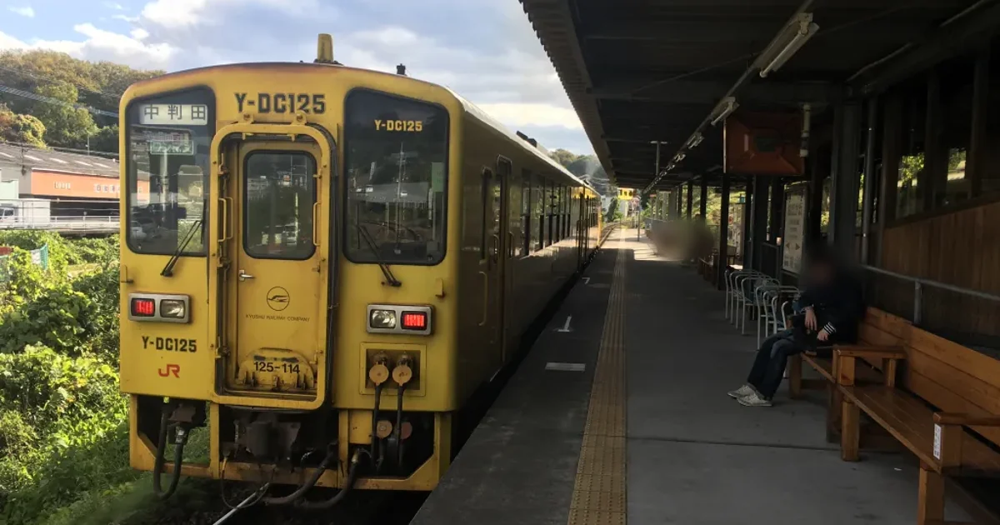
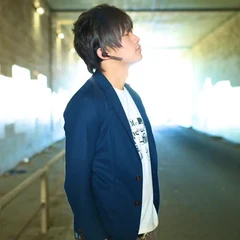

大分大学前駅の浮気調査｜閑静な住宅街ならではの張り込みの難しさと、街の特徴・利便性


この記事は探偵が監修しています
監修：佐藤 良太（合同会社EXE RESEARCH 代表）
大分市の大分大学前駅の周りで、配偶者やパートナーの浮気を調べたい。この記事では、大分大学前駅のまわりがどんな街なのか、暮らしの便利さと、浮気調査をするときの難しさをまとめました。監修者は、このエリアに何度も足を運んできた探偵です。その目線から、このエリアの浮気調査で気をつけたいことをお伝えします。
大分大学前駅はどんな駅か
大分大学前駅は、大分市大字旦野原にあるJR九州・豊肥本線の駅です。2002年3月に開業した比較的新しい駅で、名前のとおり大分大学の旦野原キャンパスの最寄り駅です。
| 所在地 | 大分市大字旦野原 |
|---|---|
| 路線 | JR九州 豊肥本線 |
| 大分駅から | 9.2km。大分駅から滝尾・敷戸の次の駅 |
| 隣の駅 | 敷戸駅（大分駅側）／中判田駅 |
| ホーム | 1面1線。上りも下りも同じホームに停まる |
| 駅員 | 2018年12月から無人駅 |
| 乗車人員 | 1日平均1,550人（2024年度） |
ホームが1つしかない小さな駅ですが、1日の乗車人員は1,550人と、大学のある駅らしく利用は多めです。
駅のまわりの街の特徴
駅のまわりは、大学と住宅地が中心の、静かな街です。
- 大分大学の旦野原キャンパス：駅名のとおり、駅のすぐ近くにあります。周辺には学生向けを含む賃貸アパートも見られます。
- 団地とニュータウン：旦野原団地や高江ニュータウンなど、戸建てや団地が広がる住宅地があります。
- そのほかの施設：陸上自衛隊の大分分屯地や、大分県産業科学技術センターがあります。
繁華街のような人の流れはなく、昼も夜も落ち着いた雰囲気です。住む人にとっては暮らしやすい環境ですが、浮気調査の目線で見ると、この「静かさ」が調査を難しくします（後で詳しく説明します）。
暮らしの利便性：大分の中心部へも、車でも出やすい
大分大学前駅のまわりは、静かな住宅地でありながら、移動の便利さもそろっています。
- 電車：豊肥本線で大分駅まで乗り換えなしで出られます。大分駅からは9.2kmです。
- 車：近くを国道10号が通っていて、大分の中心部や郊外へ車で出やすい場所です。
- 買い物：駅のすぐ前にコンビニがあります。
浮気調査で大切なのは、対象者がどの手段で動くかです。このエリアでは、電車で大分駅方面へ出るのか、車で国道10号を使うのかによって、調査の組み立てががらりと変わります。電車なら駅での待ち合わせを、車なら車両での尾行を想定することになります。
閑静な住宅街だから、張り込みが難しい
監修者がこのエリアで実感してきたのが、閑静な住宅街ならではの張り込みの難しさです。
- 人通りが少なく、人も車も目立つ：繁華街なら人ごみにまぎれられますが、静かな住宅街では、同じ場所に人や車がとどまっているだけで目につきます。
- 住民に気づかれやすい：団地やニュータウンのように住む人が決まっている場所では、見慣れない車や人はすぐに気づかれます。
- 長い時間とどまれる場所が限られる：住宅地の中には、車を止めて様子を見続けられる場所がほとんどありません。
一度「見張られている」と気づかれると、相手は会い方や場所を変えてしまいます。そうなると、その後の調査がとても難しくなります。このエリアでは、張り込みの時間と場所をしぼり、気づかれない距離を保つことが何より大切です。
このエリアの浮気調査を探偵に頼むときのポイント
大分大学前駅のまわりで浮気調査を頼むときは、次の点を探偵と共有しておくと、計画が立てやすくなります。
- 対象者が電車と車のどちらで動くか：駅から出るのか、車で国道10号へ出るのかで、必要な人数や車両が変わります。
- 怪しい曜日や時間帯：静かな住宅街では長い張り込みが難しいため、動きそうな日時をしぼることで、気づかれる危険と費用の両方を抑えられます。
- 相手の家や会っていそうな場所：場所の見当があれば、住宅地での張り込みを短くできます。
探偵を選ぶときは、面談で「このエリアでどう張り込むか」を具体的に説明できるかを確かめましょう。「どこでも同じやり方で大丈夫」という説明しかない事務所は注意が必要です。大分県の探偵事務所の数や選び方は「大分県で浮気調査を探偵に頼むなら」、離婚を考えている方は「大分県の離婚調停の流れ」も参考にしてください。
よくある質問
大分大学前駅は、大分駅からどのくらい離れていますか？
JR豊肥本線で大分駅から9.2kmで、滝尾駅・敷戸駅の次の駅です。乗り換えなしで大分駅へ出られます。
大分大学前駅のまわりで、張り込みが難しいのはなぜですか？
駅のまわりは大学と団地・住宅地が中心の静かな街で、人通りが少ないため、同じ場所にとどまる人や車が目立ちやすいからです。張り込みの時間と場所をしぼる工夫が必要になります。
大分大学前駅は無人駅ですか？
2018年12月から無人駅です。ホームは1面1線で、上りと下りの列車が同じホームに停まります。
対象者が車で移動する場合も、浮気調査はできますか？
できます。このエリアは国道10号に出やすいため、車で移動する人も多い場所です。車での尾行が必要かどうかで人数や費用が変わるため、依頼する前に移動手段を探偵に伝えてください。
大分大学前駅の近くに、探偵事務所はありますか？
当サービスの届出データでは、大分市に営業所がある探偵業者は24件です。大分市のページから、届出業者の一覧を確認できます。
まとめ
- 大分大学前駅は豊肥本線の駅で、大分駅から9.2km。1日の乗車人員は1,550人（2024年度）
- 駅のまわりは大学と団地・住宅地が中心の、閑静な街
- 電車でも国道10号を使った車でも、大分の中心部へ出やすい
- 静かな住宅街ほど人や車が目立ち、張り込みが難しい。日時と場所をしぼるのが大切
大分市の探偵事務所は、「大分市の届出探偵業者一覧」や「大分県の届出探偵業者一覧」から探せます。
大分県の届出業者を、市町村や業者名から探せます。
大分県の探偵事務所を探す